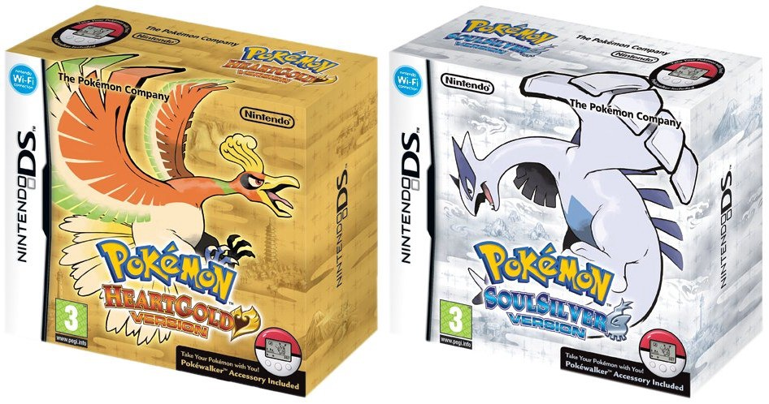
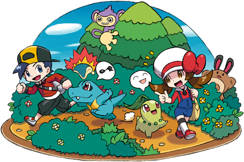
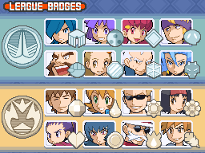
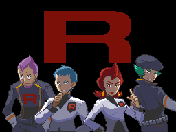
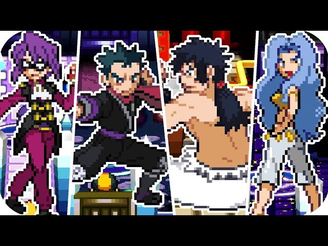
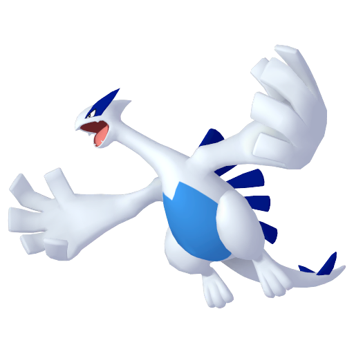
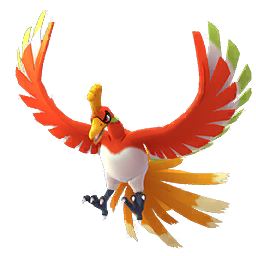

Sobre os Jogos:
O jogo Pokémon heart Gold & Soul Silver produzido pela Game Freak, lançado no ano de 2009 é o remake dos jogos pokémon Gold e silver do GameBoy color, o qual traz além de gráficos e musicas melhoradas, nos traz algumas configurações novas como os pokémon que te seguem durante o jogo, a opção de tirar fotos pelo mapa(com um npc específico que aparece em cada rota dependendo do dia da semana), alguns eventos como o pokelathon que é uma espécie de gincana para conseguir itens além de ser algo muito divertido.
Outro ponto que podemos resaltar nesse jogo é o seu pós game que traz horas e horas de gameplay, como lutas com lendários de outras regiões revanches com a elite dos 4, com lideres de ginásios e muito mais, por isso se não conhece esse jogo ou ainda não jogo recomendo muito pois é um dos meus jogos favoritos dessa franquia que tanto amo ❤️
Capa dos jogos:
Personagens Principais:
Nesse jogos temos como protagonistas os personagens Lyra e Ethan.
Ginásios:
Neste jogo enfrentamos os ginásios(gym) de jhoto na primieira parte do gamne e na segunda parte enfrentamos os gym de kanto( para dar aquela nostalgias dos jogos red,blue).
Equipe vilã:
Em pokemon HGSS enfrentamos novamente a equipe rocket, que parecia a muito derrotada, mas tudo isso era apenas um plano para poderem agir de forma escondida e tenta\rem finalmente realizarem seus planos.
Elites dos 4:
Na elite dos 4 lá é onde fica a real e verdadeira dificuldade do game, pois é onde enfrentamos os treinadores mais fortes e que se especializaram em um tipo de pokémon específico, então cuidado quando for enfrentalos esteja pronto, com potions e rivives.
Lendários:
Nessa região temos os lendário Lugia e OH-ho,dois passaros lendários, um que habita o fundo dos oceanos e o outro que habita os céus.
 